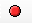
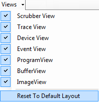

The Scrubber CL interface encapsulates a set of powerful tools for
different profiling options

Start Capture
Erase Gantt View, Trace View, etc

Toggles the views of trace, device, etc
Switch of one shot application or repetitive application profiling
On and off switch to read buffer or image object back
to profiler.
Zoom in/out/reset the Gantt View.
On and off switch to show and hide event dependency
line in Gantt View.